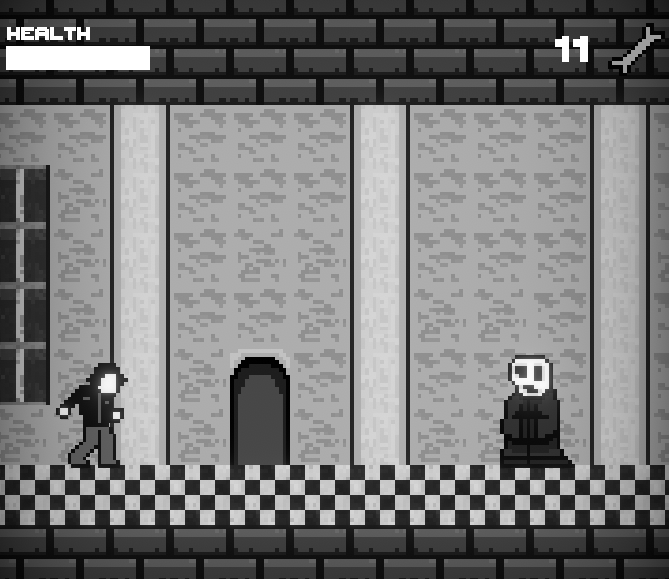
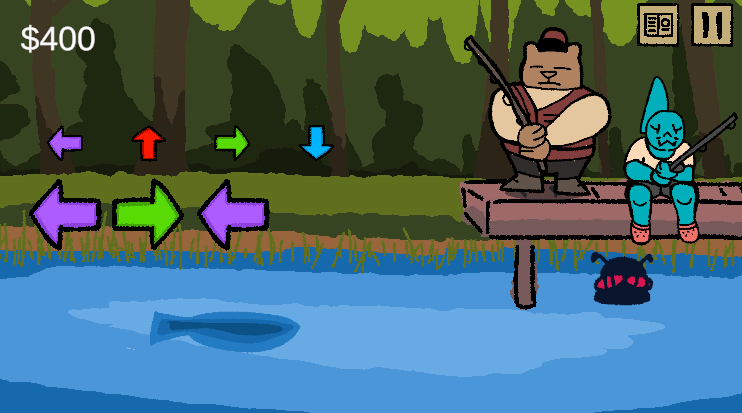

About Me
Hi! I'm a developer with experience teaching coding to kids and making games. I graduated from Washington State University with a bachelor's degree in computer science in 2024. I'm looking to grow my skills as a software engineer and game artist!
Projects
Bottom-Up Beatdown: Hostile Takeover

A fast-paced 1-lane beat em' up with fun characters, expressive combat, and interactive enemies. Play through a solo campaign mode or co-op with a friend! Demo available!
View Steam PageHere's the Kicker!
A speedrun game developed for the Game Maker's Toolkit Game Jam 2025. Kick off enemies and reach the top of the tower before time runs out! Placed 61st out of 9528 entries in enjoyment.
View itch.io page View Github pageDead Again

A game inspired by the Castlevania and Silent Hill series, developed for SCREAM JAM 2024. Fight your way through a city of haunted spirits!
View itch.io page View Github pageNice Time
A speedrun game developed for the WSU Crimson Game Jam 2024. Slide your way through frozen surfaces and freeze your enemies to make platforms!
View itch.io page View Github pageFastest Fishing

A short game about collecting fish. Match the inputs on the screen to fish! Earn money, buy upgrades, and complete your fisctionary!
View itch.io page View Github page